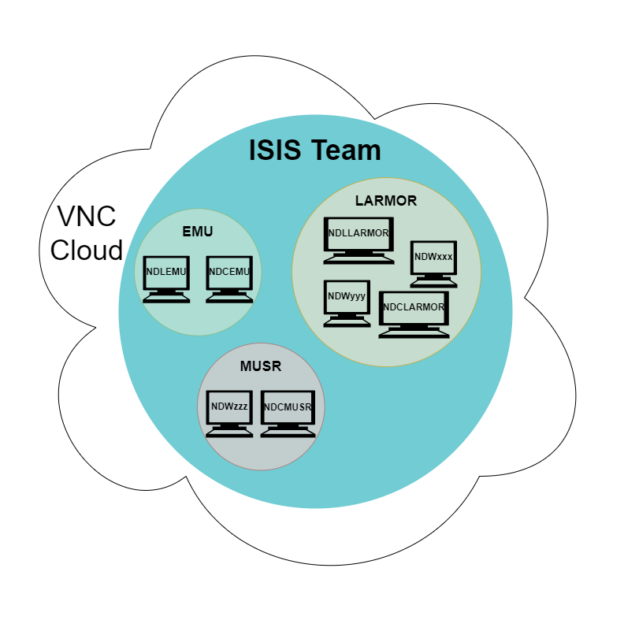

Remote Working (VNC Cloud)
Proposed structure for VNC Cloud Groups:

Proposed procedure for setting up VNC Cloud access:
Owner / Admin (Single Experiment Controls group member)
Enables “global” Two-Factor Authentication for all users of the VNC Cloud system, in accordance with site security advice.
Creates “Machine Groups” in VNC portal all within the ISIS “Team”, one per physical ISIS instrument e.g. “LMX” (See diagram above)
Creates “People Groups”, one per instrument (e.g. “LMX Instrument Scientists” or perhaps “LMX Users” containing instrument scientists and external users for simplicity)
Grants access to Machine Group to appropriate People Group
Invites Instrument Scientists (IS) to create a VNC account via VNC portal (invitation email)
Grants “Manager” privilege to IS
Adds IS to appropriate People Group(s)
Manager (IS or other ExptCtrl member)
Creates VNC Cloud account using link in invitation email from Owner/Admin
Sends emails to external users via VNC Cloud portal inviting them to create a VNC account
Grants “User” privilege to new users
Adds users to appropriate People (instrument) Group(s) (and removes when experiment over)
(Optional if willing & able) Installs VNC Server on the relevant machine(s) (e.g. NDCxxx & NDLxxx) via conventional VPN and RDP. (Details in “Deployment” section of VNC Cloud portal). More help in VNC Article
Enables “Cloud Connectivity” in Server options. More help in VNC Article
Adds “local” computers (viewing, analysis, etc.) to Machine Group(s) (See diagram above)
Performs below steps to use VNC client
User (External facility user):
Creates VNC cloud account using link in invitation email from IS
Downloads, installs and runs VNC client.
Logs in and is presented with list of machines authorised to connect to
Connects to a machine, typically a general access cabin PC (NDCxxx) or analysis machine (NDLxxx) [at this point has same access as if physically present in instrument cabin]
Connects to instrument control computer (NDXxxx) via RDP (if session not already established)
Read/Write and Read-only
The Read Only and Read/Write access is to be controlled by changing the privileges on the viewing machine’s standard instrument user account (ISUA).
This will be for the simplest case for when the viewing machine is running Windows and has (ISIS instrument) standard local user and admin accounts, although the principal still applies to a Linux analysis machine and other cabin machines.
Procedure:
Instrument scientist adds ISUA to access list in “Users and Permissions” section of VNC Server options
IS changes permissions in VNC server settings for ISUA to be either R or R/W to suit experiment
User runs local VNC client and logs in using their personal account
User sees list of available machines and connects to one using ISUA
Views (if R only and connection previously established by IS) OR
Connects (if R/W) to screen of instrument control computer via RDP if no active session, or “local” VNC client (as if in cabin in person)
Instrument scientist sets privileges of ISUA back to Read Only after experiment ends
(Optional) IS removes user from “Instrument People group” in VNC Cloud portal
See VNC article for more information.
NB
When connecting using an account which has Read Only access, the Users will have no control over the remote computer whatsoever, not even being able to connect to the control machine. This option is severely limited (by design) and so relies heavily on the IS to create and leave the RDP session to the control machine in a state which will provide sufficient information to their Users.
The Read / Write option on the other hand, offers full control of the remote computer and so the IS needs to consider carefully the implications of allowing Users to connect with this privilege level.
Troubleshooting
If you can connect via cloud VNC but get a blank screen that you can do nothing with, this may be because no monitor is attached to the computer. The cloud VNC mechanism needs to have the vnc server program running in service mode (as a windows service), and this seems to need a screen of some sort. We run VNC server in user mode on the NDX and this is happy just having an active remote desktop session rather than a real screen, but user mode only allows point to point and not cloud connections.
We have purchased some “screen dongles” that can be used instead of a real monitor, these attach to e.g. a display port adapter port on the PC.